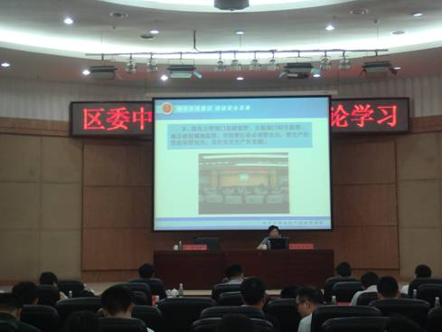
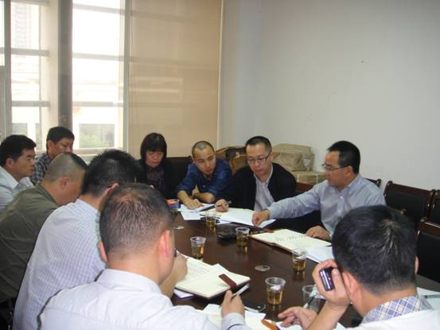
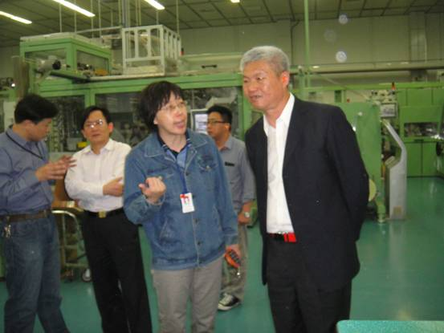
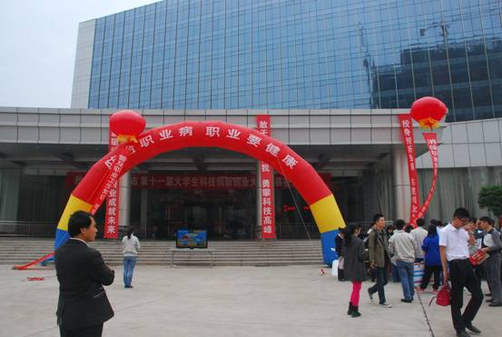
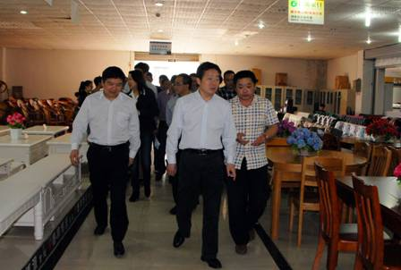

-

**省安全生产示范县命名授牌暨**市最佳安监人员命名仪式在**区红星社区安全生产宣传咨询活动现场举行
正值全国安全生产月活动如火如荼开展的重要时刻， 6月16日上午，在**市**区红星社区的全国安全生产宣传咨询日活动现场，省安委办和**市安委会联合举行“**省安全生产示范县命名授牌暨**市最佳安监人员命名仪式”。
-

市安委办主任、市安全监管局局长***为**区区委中心组（扩大）理论学习授课
6月9日下午，市安委办主任、市安全监管局局长、市安全生产讲师团成员***为**区区委中心组（扩大）理论学习授课，**区全体在职县级领导，各部门、街道正科级以上领导干部共245人参加了学习。
-

**区组织爆竹企业开展安全标准化达标评审
为深入贯彻落实《国务院安委会关于深入开展企业安全生产标准化建设的指导意见》和《国家安全监管总局关于全面开展烟花爆竹企业安全生产标准化工作的通知》精神和市安监局相关工作要求,我局结合实际，印发了《**市**区烟花爆竹安全生产标准化工作实施方案》，严格按照国家总局烟花爆竹企业标准化安全条件、安全管理、安全文化创建三大体系和基本要素的有关要求，组织辖区内烟花爆竹批发企业进行标准化全面系统创建，经过企业自评和评价机构评审，完成了安全标准化创建工作。
-

**区请专家帮助企业排查和治理隐患
5月6日，**区副区长、区安委会副主任***组织召开了隐患交办会，对前期专家在**红星冷冻食品有限公司、**红星盛业食品股份有限公司检查中发现的问题和隐患进行了集中交办，正式启动了**区专家排查治理隐患工作机制。
-
落实群教实践活动，积极开展打非行动
**区安监局直管科坚持群众路线教育实践活动，创新安全监管模式，始终坚持一切为了群众，一切依靠群众，从群众中来，到群众中去，密切关心人民群众的生命财产安全，积极开展打非
-

总局监管四司到**区调研指导安全生产标准化、隐患排查治理体系建设工作
4月16日，国家安监总局四司***监察专员一行到**市**区，调研隐患排查治理体系建设及标准化建设工作情况。省安监局***副局长、市安监局***副局长等陪同调研。
-
**区开展瓶装液化气经营门店整治情况专项督查
为深刻吸取事故教训，切实加强区域安全生产工作，有效遏制生产安全事故，确保区域安全稳定。4月9日，由区人民政府副区长***、***带领区政府督查室、区城乡建设局、区交通运输局、区安监局、区公安分局、区工商分局、区质监分局、区消防大队等部门有关同志，对各街道瓶装液化气经营门店整治情况开展了专项督查。
-

**区安监局开展以“防治职业病，职业要健康”为主题的《职业病防治法》宣传活动
**区安全监管局在《职业病防治法》宣传周活动期间，以推进职业卫生基础建设和职业卫生管理示范企业创建为契机，突出以“防治职业病，职业要健康”为主题，开展了形式多样宣传活动。
-

副市长***带队督查我区安全生产工作
4月14日下午，副市长***、市政府副秘书长***率领市政府办公厅、市水务局、市城管执法局、市安全监管局、**供电公司、市公安消防支队等单位领导一行来我区开展安全生产督查。区委副书记、区长***、副区长***等陪同督查。
-
安监局开展瓶装液化气经营门店整治情况督查 力保群众生命财产安全
为深刻吸取事故教训，切实加强区域安全生产工作，有效遏制生产安全事故，确保区域安全稳定。4月9日，由区人民政府副区长***、***带领区政府督查室、区城乡建设局、区交通运输局、区安监局、区公安分局、区工商分局、区质监分局、区消防大队等部门有关同志，对各街道瓶装液化气经营门店整治情况开展了专项督查。
-
**区召开瓶装液化气经营门店专项整治调度会
3月24日上午，**市**区瓶装液化气经营门店专项整治调度会在区政府一号楼A101会议室召开，会议由区委常委、区政府副区长***主持并发表重要讲话，区政府副区长***、区政府副调研员***、区政府副调研员***以及区政府办、区公安分局、区消防大队、区质监分局、区工商分局、区城建局、区安监局、区交运局、**经开区、各街道办事处的行政主要负责人等部门参加了会议。会议特别邀请了市燃气热力管理副局长金建华、科长罗正友到会发言。
-
**区对红星实业集团有限公司进行安全生产约谈
2014年3月24日，**区人民政府在区政府A101会议室组织召开了对红星实业集团有限公司进行的安全生产约谈会。区人民政府副区长***同志、***同志，副调研员***同志、***同志出席会议，区政府办、区监察局、区安监局、区公安分局、区消防大队、井湾子街道办事处等单位有关负责同志，红星实业集团有限公司董事长吴建松、总经理罗跃参加会议。会议由区政府办常务副主任***同志主持。
-
**区把“三自”系统当作安全监管新抓手
安全生产事故隐患自查自报自改系统是一个互联互通、资源共享、三级联动的网络化监管系统。
-
吹响创建安全生产标准化企业“集结号”
3月18日上午，**区安全监管局组织128家企业召开了安全生产标准化创建工作动员会。
-
*****县来我区学习考察省级安全生产示范区创建经验成果
3月12日，*****县委常委、副县长***带领县政府办、县安监局、县交运局、县交警大队、县消防大队等部门主要负责人一行，到访我局。